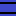

- CalculateGraphicalBarPercentage: Calculates the ratio of Quantity over MaxQuantity to X over the number of pieces (the whole bar). For example: 50/100 on a 62-pieced bar outputs value of 31.
- Y = $00 if not rounded to empty or full (if exact empty, rounded to any number besides 0 or maximum, or full (or higher))
- Y = $01 if rounded to empty.
- Y = $02 if rounded to full. See more information here.
- DrawGraphicalBar: it takes a value representing how much fill in the bar, and represent them as individual tiles bytes table containing a number of them that is “full”,
one byte holding the “fraction” and then a number of “empty” bytes after if any of them exist. If you were to add up each byte, the total would equal to the value the number of pieces
you entered. The inputs are similar to the previously mentioned routine (such as requiring the attributes), but you don't write to !Scratchram_GraphicalBar_FillByteTbl to
!Scratchram_GraphicalBar_FillByteTbl+3, as it is no longer needed. Just to keep in mind, the attributes are kept after running this routine, so you don't have to rewrite them again.
$00 to $01 is the number of units (or pieces) filled as the input. It is important to note that this output table isn't tile numbers but rather
fill amounts, to be indexed into tile numbers (to allow different tile graphic locations for the same routine (such as different format on the overworld compared to level)). The only different
input here is $00:
Result:Input Description $00 to $01 (16-bit) The amount of fill in the bar, as in, the total number of pieces filled.
The total number of pieces (full amount) in the bar is calculated as: [FullAmount = LeftEndPiece + (MiddlePiece * MiddleLength) + RightEndPiece], for example: 62 = 3 + (7 * 8) + 3
This is what it looks like as an example:Output Description !Scratchram_GraphicalBar_FillByteTbl to !Scratchram_GraphicalBar_FillByteTbl+X The table containing a series of bytes ordered from full, then one containing a fraction byte (it ranges from 0 to max-1), then a series of empty bytes. Should the bar be more than full (say, 63 out of 62 pieces), the values stored in this table will act as if the bar is full and does not write higher values nor write additional bytes.
The ending address is
And the number of bytes this table uses is the same formula above but without the “- 1”.X = (LeftEnd + MiddleLength + RightEnd) - 1
where:- LeftEnd is 0 if the left end have 0 pieces and 1 if any non-zero number.
- RightEnd is the same as above but for right end.
- MiddleLength is equal to !Scratchram_GraphicalBar_TempLength (number of middle tiles) if !Scratchram_GraphicalBar_MiddlePiece is a nonzero number, and 0 otherwise.
$00 to $07 Garbage: - $00 to $01:
- If the right end exist without regards of the middle and left end, will contain the right end amount.
- #$00 if right end does not exist and middle exist.
- If the left end only exist and middle and right are not, contains the left end amount.
- $02 to $07: Needed to move the values to another address due to subroutines as well as outputs of the subroutines.
$08 to $09 The amount of fill that was $00 to $01 was originally before calling this routine, the value is not capped, so inputting a number 63 when there are 62 pieces will have this RAM address storing the value 63. Can be used on such things like “multi-bars” that multiple bars are shown, and the fills advances to the next bar: - Cyan means the left end tile byte.
- Green means the middle tile byte(s).
- Red means right end tile byte.
- Orange means the tile byte is full or reaches maximum.
- Yellow means the tile byte is between 0 to max-1 inclusively (known as a fraction tile).
- Grey means the tile byte is empty.
;These three are what sets the maximum fill values for the byte table. !Scratchram_GraphicalBar_LeftEndPiece: $03 !Scratchram_GraphicalBar_MiddlePiece: $08 !Scratchram_GraphicalBar_RightEndPiece: $03 ;This is how long the middle section. !Scratchram_GraphicalBar_TempLength: $07 ;The number of units or pieces filled: RAM address $00-$01: $0017 (23)
ASCII art depicting the byte table and how each byte correlates to the table. Table: $03,$08,$08,$04,$00,$00,$00,$00,$00 | | | | | | | | | !Scratchram_GraphicalBar_FillByteTbl+0 ------/ | | | | | | | | !Scratchram_GraphicalBar_FillByteTbl+1 ----------/ | | | | | | | !Scratchram_GraphicalBar_FillByteTbl+2 --------------/ | | | | | | !Scratchram_GraphicalBar_FillByteTbl+3 ------------------/ | | | | | !Scratchram_GraphicalBar_FillByteTbl+4 ----------------------/ | | | | !Scratchram_GraphicalBar_FillByteTbl+5 --------------------------/ | | | !Scratchram_GraphicalBar_FillByteTbl+6 ------------------------------/ | | !Scratchram_GraphicalBar_FillByteTbl+7 ----------------------------------/ | !Scratchram_GraphicalBar_FillByteTbl+8 --------------------------------------/
Note: define !Scratchram_GraphicalBar_FillByteTbl is an address, thus the above math (note the +x) means you add the value of the address (not the value stored in) to get the relative location (so if !Scratchram_GraphicalBar_FillByteTbl is being defined as $7F844A and you have !Scratchram_GraphicalBar_FillByteTbl+1, that is $7F844A + 1 which is address $7F844B).
If any maximum was set to $00, they are excluded from the table and are skipped (no longer uses the ASCII lookup table for smaller display):!Scratchram_GraphicalBar_LeftEndPiece: $00!Scratchram_GraphicalBar_MiddlePiece: $08 !Scratchram_GraphicalBar_RightEndPiece: $03 !Scratchram_GraphicalBar_TempLength: $07 RAM address $00-$01: $0017 (23)!Scratchram_GraphicalBar_FillByteTbl
relative address:+0 +1 +2 +3 +4 +5 +6 +7 +8 Table values: $08 $08 $07 $00 $00 $00 $00 $00 (unused, garbage) !Scratchram_GraphicalBar_LeftEndPiece: $03
!Scratchram_GraphicalBar_MiddlePiece: $00!Scratchram_GraphicalBar_RightEndPiece: $03!Scratchram_GraphicalBar_TempLength: $00RAM address $00-$01: $0004 (4) Note: !Scratchram_GraphicalBar_MiddlePiece and/or !Scratchram_GraphicalBar_TempLength is set to zero, excludes the middle section.!Scratchram_GraphicalBar_FillByteTbl
relative address:+0 +1 +2 +3 +4 +5 +6 +7 +8 Table values: $03 $01 (unused, garbage) !Scratchram_GraphicalBar_LeftEndPiece: $03 !Scratchram_GraphicalBar_MiddlePiece: $08
!Scratchram_GraphicalBar_RightEndPiece: $00!Scratchram_GraphicalBar_TempLength: $07 RAM address $00-$01: $0017 (23)!Scratchram_GraphicalBar_FillByteTbl
relative address:+0 +1 +2 +3 +4 +5 +6 +7 +8 Table values: $03 $08 $08 $04 $00 $00 $00 $00 (unused, garbage)
Of course, I made a javascript code page that calculates memory statistics without the need of manually calculating the values.
- RoundAwayEmpty, RoundAwayFull, and RoundAwayEmptyFull: After getting the Y register value from CalculateGraphicalBarPercentage, this increments or decrements the fill amount $00-$01 by 1 so it will display 1 and/or MaxFill-1 instead of showing 0 and/or MaxFill when the value is rounded towards them. The names of the routine should be obvious (e.g. RoundAwayEmpty means round away from empty).
| RAM input | Description |
|---|---|
| !Scratchram_GraphicalBar_FillByteTbl to !Scratchram_GraphicalBar_FillByteTbl+1 (16-bit) | The number or amount of something out of the maximum (known as the “quantity”). |
| !Scratchram_GraphicalBar_FillByteTbl+2 to !Scratchram_GraphicalBar_FillByteTbl+3 (16-bit) | The maximum amount something. If this value is $0000, will assume the bar is full due to dividing by zero (known as “max quantity”). |
| !Scratchram_GraphicalBar_LeftEndPiece, !Scratchram_GraphicalBar_MiddlePiece, !Scratchram_GraphicalBar_RightEndPiece, and !Scratchram_GraphicalBar_TempLength (8-bit each) | Graphical bar attributes. The ones with the word “piece” refer to the number of pieces
or units in their respective byte or 8x8 tile. When 0, they are not included in the table. !Scratchram_GraphicalBar_TempLength
is the number of repeated middle tile bytes between the left and right end tile bytes. The reason why the pieces setup is RAM-based is so you can have different number of pieces in any bar part (left, middle, and right), for example, 6 pieces for left end along with 3 in the same routine. However, you have to have both tables in the tile converter in GraphicalBarConvertToTile.asm to avoid glitched tiles. |
| Output: | Description |
|---|---|
| $00 to $01 (16-bit) | The amount of fill as a “percentage”. Calculated by FillAmount = RoundHalfUp(Quantity * TotalNumberOfPiecesInBar / MaxQuantity) |
| Y register | Rounding towards empty and full indicator:
|
| $02 to $09 | Overwritten by math routines. Contains garbage values. |
- ConvertBarFillAmountToTiles: converts the bar fill table into tile numbers via indexing (inputs the same as above and don't
need to be rewritten):
Left end Middle Right end - Fill amount $00 → tile number $36
- Fill amount $01 → tile number $37
- Fill amount $02 → tile number $38
- Fill amount $03 → tile number $39
- Fill amount $00 → tile number $55 
- Fill amount $01 → tile number $56
- Fill amount $02 → tile number $57
- Fill amount $03 → tile number $58
- Fill amount $04 → tile number $59
- Fill amount $05 → tile number $65

- Fill amount $06 → tile number $66
- Fill amount $07 → tile number $67
- Fill amount $08 → tile number $68
- Fill amount $00 → tile number $50
- Fill amount $01 → tile number $51

- Fill amount $02 → tile number $52
- Fill amount $03 → tile number $53
So if !Scratchram_GraphicalBar_FillByteTbl contains these values and gets converted, this happens:!Scratchram_GraphicalBar_FillByteTbl
relative address:+0 +1 +2 +3 +4 +5 +6 +7 +8 Table values...: $03 $08 $08 $04 $00 $00 $00 $00 $00 ...converted to tile number: $39 $68 $68 $59 $55 $55 $55 $55 $50 Tile image: Result:
If you changed the number of pieces in any of the 3 parts of the bar (left, middle, and right), the number of pieces must equal to the number of values +1 (+1 because an empty tile byte is included) in the table corresponding to the bar part, for example, by making left end have 4 pieces instead of 3, you must have 5 values in the left end tile table. Else your tiles will glitch.
Note that scratch RAM $00 and $01 is overwritten to determine should it use overworld border version and handle a loop that translates the middle tiles.
- ConvertBarFillAmountToTilesDoubleBar: Same as above, but handles a double-filled bar. Tiles are formated like this. Also like above, make sure you have the number of pieces equal to (NumberOfPieces+1)^2 number of values in table (for example, left end have 4 pieces, therefore you must have 25 values; (4+1)^2 = 25). I recommend to have the table to form a perfect square so that the fill values are visually organized.
Of course, the default graphics included here are pixel-column-based, meaning each column of pixels is 1 piece of a bar.
Note that this does not support overworld graphics unlike above, as there are even more tiles used than the status bar.
- WriteBarToHUD: Copies the tile numbers in the table to paste to (writes) the status bar (if you're using the Super Status Bar patch, the if statement and defines will adopt to that).
Inputs are again, similar to CalculateGraphicalBarPercentage with only the attributes being used, but a new input is required:
Input Description $00 to $02 (24-bit) The starting address (left end, extends rightwards, even when the bar is set to fill leftwards) location to write the tile numbers to the status bar. $03 to $05 (24-bit) The starting address (left end, extends rightwards, even when the bar is set to fill leftwards) location to write the tile properties to the status bar. (This only works if you installed status bar patches that enable editing the properties in-game, and set !StatusBar_UsingCustomProperties to 1, else this is no longer needed to write values to this input). I deliberately used the if statement around this to prevent writing to an arbitrary address (the STA [$03],y could write to an invalid address). $06 (8-bit) The tile properties (YXPCCCTT). Same as above, if you have it disabled, this is not used.
Remember that this is little endian (The address $7E0F09, for example are stored in each bytes as$7E0000: $09 $7E0001: $0F $7E0002: $7E
so be careful on that.). Of course, because the Overworld Border Plus patch have the same format as the Super Status Bar patch, it will work on that as well (if !StatusBarFormat set to $02 and you make a different version of the routine ConvertBarFillAmountToTiles to use a different table to use OW layer 3 tiles).
- WriteBarToHUDLeftwards: Same as above, but only works properly if you managed to set bit 6 of YXPCCCTT properties byte. This will write a X-flipped version that the bar now fills from right to left. Tiles arranged are flipped so the leftmost tile (including the end tiles) is now the right most, the second leftmost is second rightmost, and so on. If you didn't X-flip the tiles via editing the tile properties (YXPCCCTT), each tile won't be X-flipped but are still arranged backwards (when filling up, the rightmost tile fills towards the right and advances to the tile towards the left). In vanilla SMW, it is still possible to edit the tile properties (but cannot be changed in-game as the data is stored in ROM) at around address $008C81.
- BarExtendLeft: Normally, without this routine, as the bar's length (not to be confused with the above routine) increases (say, increase the middle length), the
bar always extends rightwards. With this, you call this routine before you call WriteBarToHUD or WriteBarToHUDLeftwards to make it extend leftwards. What
happens is that it calculates where the leftmost tile would be at depending on the length of the bar, so the “origin tile ” of the position gets moved.
This is useful for displaying enemy HP bars that are “right aligned” that have lengths proportional to how much max HP the enemy has and extend leftwards.
Be careful with bank borders crossing (don't have status bar tile tables that goes from $7EFFFF to $7F0000, for a made-up example), as I discovered that Akaginite's 16Bit - 8Bit (done by ((-8Bit) + 16Bit)) does not work with bank borders if 8Bit is $00 because that causes the carry flag to be clear, unlike the normal SBC. However, this is very unlikely as no status bar tile tables would ever do that.